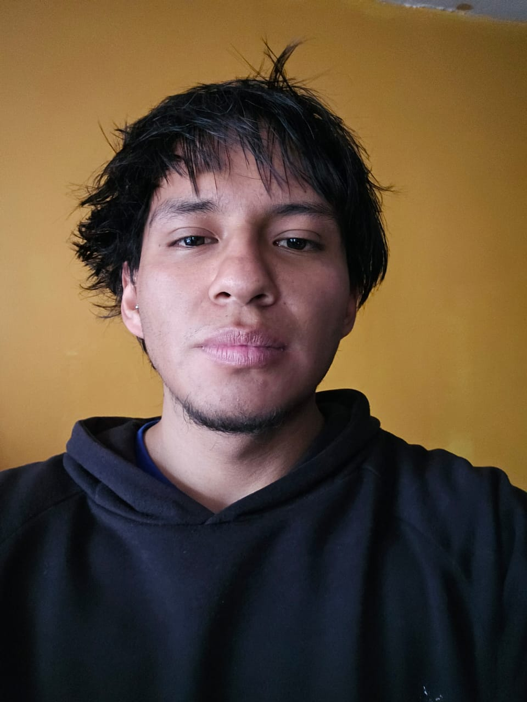

INFORMACIÓN PERSONAL
Nombre: DAVID IGNACIO IZA TULCAN
Ubicación: Quito - Ecuador
Fecha de nacimiento: 16/06/2004
Correo electrónico: davidiza2000@gmail.com
Dirección: Av. Atacazo y Panamericana Sur Km 0,Mejía, Cutuglagua
PERFIL
Estudiante de Desarrollo de Software en el Instituto Tecnológico Quito (ITQ). Cuento con formación en el área de Medicina (UBA) y experiencia en atención primaria, combinando el razonamiento analítico con conocimientos sólidos en tecnología y desarrollo de software.
FORMACIÓN ACADÉMICA
- Instituto Superior Tecnológico Quito Cursando Segundo Semestre - Desarrollo de Software
- Universidad de Buenos Aires (UBA) Medicina (Segundo año y medio)
- Colegio Técnico San José Bachillerato Técnico en Electromecánica Automotriz
CURSOS REALIZADOS
- Curso Primeros Auxilios Avanzado Cruz Roja Ecuatoriana (2022)
- Curso Inyectología Cruz Roja Argentina (2025)
EXPERIENCIA LABORAL
- Dobladora Victor's Ecuador - Ayudante (2026)
- Cartu 724 Argentina - Cajero (2025)
- Aldo's Brasserie Argentina - Mesero (2025)
- Isla Sakura Argentina - Mesero (2024)
- Central Pizzas Empanadas Argentina - Mesero (2024)
REFERENCIAS
- Geovanny Lisintuña: 0987966485
- Sharon Cuccitini: +54 9 1121691243
- María: +54 9 1127285861